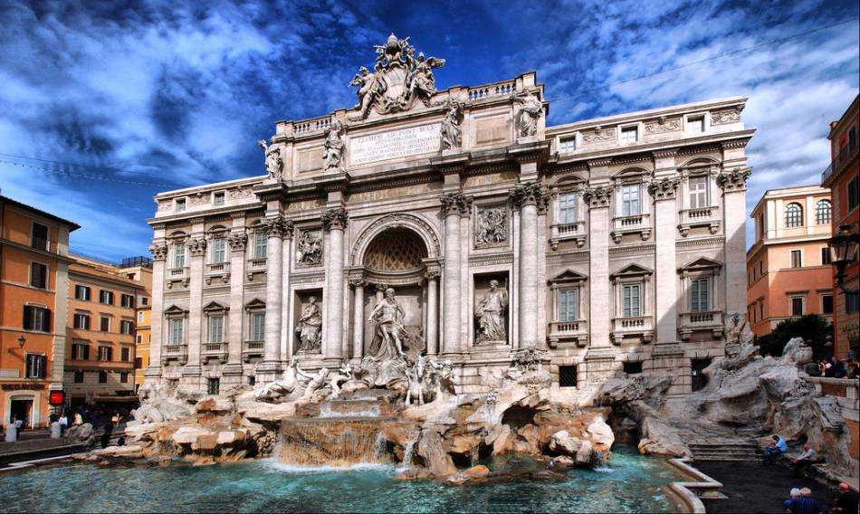

Fontanna di Trevi
Trudno o większy symbol nowożytnego Rzymu niż klasycystyczno-barokowa Fontanna di Trevi (wł. Fontana di Trevi), którą pragnie zobaczyć niemal każdy turysta przybywający do Wiecznego Miasta.
Szczególnemu odbiorowi fontanny sprzyja jej położenie. Wodotrysk zajmuje większą część niewielkiego i otoczonego przez wysokie fasady Placu di Trevi (wł. Piazza di Trevi). Spacerując w stronę fontanny nie zobaczymy więc jej z oddali, a będziemy jedynie coraz lepiej słyszeć charakterystyczny szum wody. Dopiero po dojściu na miejsce naszym oczom ukaże się najwspanialsza z rzymskich fontann.
Fontanna di Trevi zasilana jest wodą z akweduktu Aqua Virgo, którego pomysłodawcą był Marek Agrypa, zaufany przyjaciel cesarza Oktawiana Augusta. Akwedukt powstał w 19 wieku p.n.e. i jego głównym celem było dostarczanie wody do kompleksu termalnego (wł. Terme di Agrippa) na terenie Pól Marsowych. Ze starożytnego budynku łaźni nie zachowało się do dziś zbyt wiele. Dosłownie fragment budowli znajdziemy pod adresem Via dell'Arco della Ciambella 8.
Warto w tym miejscu wspomnieć o etymologii nazwy wodociągu Aqua Virgo. Według popularnej legendy Rzymianom udało się odnaleźć źródło wody dzięki pomocy młodej dziewicy (stąd nazwa, Virgo po łacinie oznacza właśnie dziewicę), na część której nazwano nowy wodociąg. Scena wskazania źródła przez młodą niewiastę przedstawiona została nawet na płaskorzeźbie znajdującej się w prawej części fontanny.
